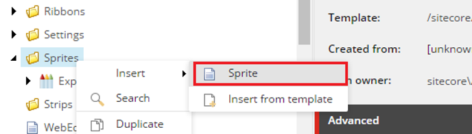
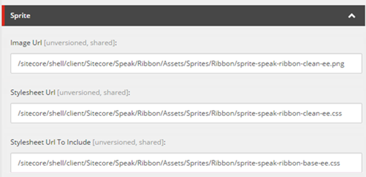
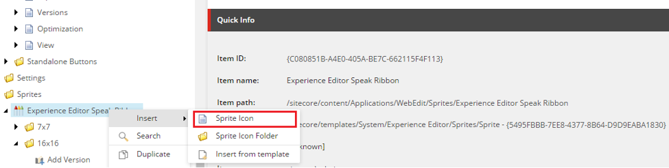
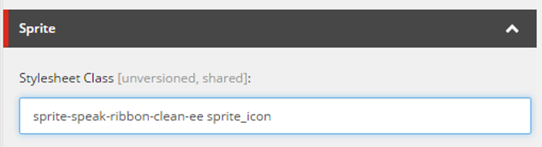
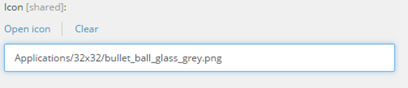
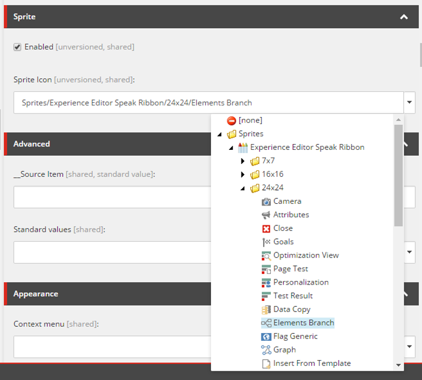
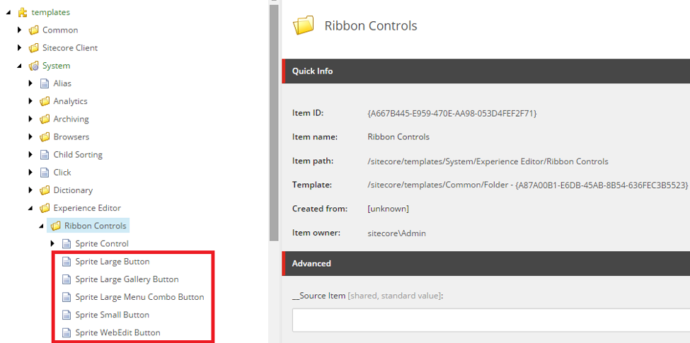

Use sprites to improve the performance of the Experience Editor
Improve page load time in Experience Editor by using sprites to decrease the number of image requests.
To improve the page load time in the Experience Editor, you can use sprites to decrease the number of image requests. You can enable your existing ribbon controls to use sprites or you can create new ribbon controls and base the new item on a sprite-compatible template.
If you want new or custom sprite icons to be available on the Experience Editor ribbon, you can create a new sprite file and then add your collection of sprite icons to it.
To create a new sprite:
In the Core database, right-click the Sprites folder (/sitecore/content/Applications/WebEdit/Sprites), click Insert and then click Sprite.
For the new sprite, in the Sprite section, specify the following two fields:
Image Url – specify the sprite image output path.
StylesheetUrl – specify the sprite stylesheet output path.
Note
The Stylesheet Url To Include field is optional. You can use it to define a basic stylesheet file that is included in a sprite stylesheet file.
Under the new sprite, you can now add your custom sprite icons. During the initialization of the Experience Editor, Sitecore regenerates all sprite resources (sprite image and stylesheet).
When you have created a new sprite, you can add your sprite icons to it.
Note
Before you can add a sprite icon to your sprite, you must upload your icons to make them available in Sitecore.
To add a custom icon to a sprite:
In the Core database, navigate to the Sprites folder (/sitecore/content/Applications/WebEdit/Sprites).
Right-click the relevant sprite item or the folder where you want to add the custom icon, click Insert and then click Sprite Icon.
For the sprite icon, specify the following:
In the Sprite section, in the Stylesheet Class field, specify the CSS class name.
In the Appearance section, in the Icon field, specify the path to the icon.
To find the path to a specific icon, click Open icon. In the Change icon dialog box, navigate to the relevant icon and click OK.

To load a sprite icon in the Experience Editor ribbon instead of the image, you can enable sprite support for existing ribbon controls.
To enable sprite support and assign an icon to an existing ribbon control:
In the Core database, navigate to /sitecore/content/Applications/WebEdit/Ribbons/WebEdit/Experience Editor/ and click the relevant ribbon control.
On the Content tab, in the Sprite section:
Select the Enabled check box to enable sprite support for the current ribbon control. In this way, the sprite icon loads instead of the image.
In the Sprite Icon field, specify the sprite icon that you want to use for the current ribbon control.
Save your changes.
When you create a new custom ribbon control, you can make it sprite compatible by basing the new ribbon control on a sprite-compatible template.
To use a sprite-compatible ribbon item:
Add a sprite-compatible ribbon item under the ribbon chunk item and configure the presentation details as you usually would.
All the sprite-compatible ribbon templates are located in the Core database, in the Ribbon Controls folder (/sitecore/templates/System/Experience Editor/Ribbon Controls):
